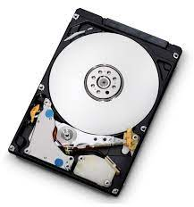

Hard Drive ou Hard Disk Drive seria o HD ou HDD. No Brasil, esse componente é simplesmente chamado de HD ou de disco rígido. Ele tem uma função fundamental em seu computador: guardar todos os seus arquivos.
O Hard Disk Drive é, ainda hoje, a principal forma de armazenar dados em um computador. Mesmo com a existência do SSD, o atual substituto do HD, eles reinam na maioria dos PCs de mesa e notebooks. No HDD fica armazenado o sistema operacional, ou seja, o seu Windows, Linux e até mesmo o Mac OS. Além do sistema, todos os programas também são salvos no HDD. Além disso, é bem provável que você salve todas as suas fotos, músicas, vídeos e documentos no HDD de sua máquina. O disco rígido usa um prato magnético para armazenar os dados. Esses pratos são divididos em vários setores e trilhas que guardam os inúmeros bytes que compõem nossos arquivos. Um braço mecânico percorre toda a área do disco magnético lendo os arquivos que são solicitados pelo usuário ou sistema operacional. Como deu pra perceber, um HDD é um item fundamental em qualquer computador.
Por ser um componente bem antigo, os HDs já atingiram um certo platô de evolução. Sendo assim, hoje não há grandes diferenças de qualidade entre um HD de uma marca e um de outra. Porém, ao longo desses anos, algumas fabricantes se sobressaíram e conseguiram sobreviver por décadas produzindo HDDs de qualidade. Dentre elas, podemos citar a Seagate, a Samsung, a Western Digital, IBM e Hitachi. Claro que existem outras mas, atualmente, essas são as mais famosas e conceituadas no mercado.
Se você está montando um computador, é certo que precisará de uma unidade de armazenamento. Se for uma máquina de alto desempenho, o ideal é que essa unidade seja um SSD, dada a sua maior velocidade. Porém, se você está montando um computador básico ou que servirá como um servidor de arquivos, um HD se faz essencial. Isso por que já é possível encontrar modelos de até 4 TB ou mais de capacidade e que possuem uma velocidade de leitura e escrita bastante razoável. O HDD é o componente que possui o valor por MB mais barato, ou seja, tem o melhor custo x benefício.
